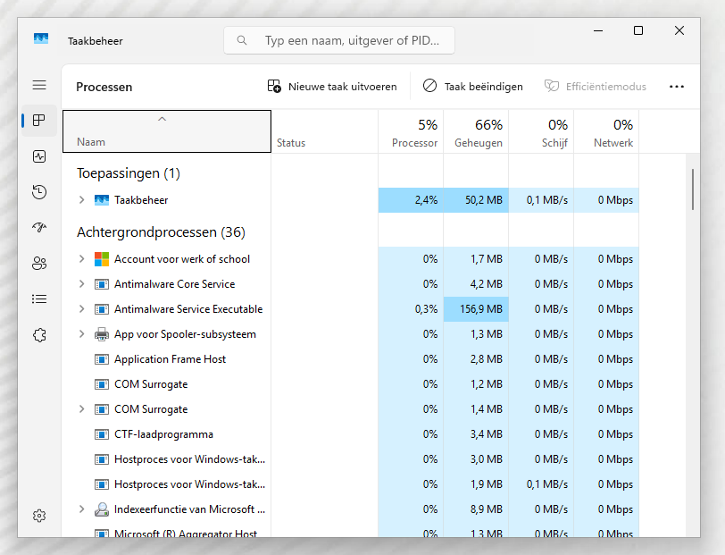

Lokaal beheer¶
1. Lokale gebruikers en groepen¶
Security Identifiers (SID's) zijn unieke alfanumerieke reeksen die gebruikt worden om gebruikers, groepen en security principals te identificeren. Elke gebruiker en elke groep krijgt een unieke SID toegewezen.
Microsoft: Security Identifiers
1.1. Lokale groepen¶
Elke Windows-installatie wordt geleverd met een aantal standaardgroepen. De meest gebruikte groepen zijn Administrators, Users en Guests. Door gebruikers aan een bepaalde groep toe te voegen, krijgen ze automatisch de machtigingen van die groep.
| Groep | Beschrijving | SID |
|---|---|---|
| Administrators | De ingebouwde groep Administrators heeft volledige controle over de computer, waardoor de leden systeeminstellingen en bestanden kunnen beheren en andere gebruikersaccounts kunnen configureren en beheren. Leden van deze groep hebben onbeperkte toegang en rechten om vrijwel elke taak op het systeem uit te voeren. | S-1-5-32-544 |
| Users | De ingebouwde groep Users bestaat uit standaardgebruikers met beperkte rechten, bedoeld om dagelijkse taken uit te voeren zonder systeeminstellingen of kritieke bestanden te kunnen wijzigen. Leden van deze groep hebben toegang tot hun eigen mappen en kunnen basistoepassingen uitvoeren, maar kunnen geen systeembrede wijzigingen aanbrengen. | S-1-5-32-545 |
| Guests | De ingebouwde groep Guests is bedoeld voor tijdelijke of occasionele toegang tot de computer, met zeer beperkte rechten. Leden van deze groep hebben minimale machtigingen, kunnen enkel hun eigen gegevens beheren en hebben beperkte interactie met het systeem. | S-1-5-32-546 |
1.2. Lokale gebruikers¶
Elke standaard Windows-installatie bevat verschillende ingebouwde gebruikersaccounts, maar die zijn standaard uitgeschakeld.
| Gebruiker | Beschrijving | SID |
|---|---|---|
| Administrator | De standaard lokale Administrator-account is een gebruikersaccount voor systeembeheer. Deze account is lid van de groep Administrators. De Administrator-account heeft volledige controle over bestanden, mappen, services en andere resources op het lokale toestel. Ze kan andere lokale gebruikers aanmaken, gebruikersrechten toewijzen en machtigingen beheren. De standaard Administrator-account kan niet worden verwijderd of vergrendeld, maar wel hernoemd. Standaard is de ingebouwde Administrator-account uitgeschakeld. | S-1-5-domain-500 |
| Guest | Met de Guest-account kunnen tijdelijke gebruikers aanmelden met beperkte rechten. Standaard is de Guest-account uitgeschakeld en heeft ze een leeg wachtwoord. Omdat de Guest-account anonieme toegang kan bieden, wordt ze beschouwd als een beveiligingsrisico. Het is dan ook een best practice om de Guest-account uitgeschakeld te laten, tenzij het gebruik ervan noodzakelijk is. | S-1-5-domain-501 |
Om alle ingebouwde gebruikers en groepen te bekijken, open je het lokale gebruikers- en groepsbeheer in Windows.
- Tijdens de Windows-installatie wordt de gebruiker die je aanmaakt automatisch toegevoegd aan de groep "Administrators".
- Alle gebruikers die je daarna aanmaakt, worden automatisch toegevoegd aan de groep "Users". Om een andere gebruiker beheerdersrechten te geven, moet je hem toevoegen aan de groep "Administrators".
2. Windows Settings¶
Windows Settings biedt gebruikers een centrale interface om hun systeemvoorkeuren en -instellingen aan te passen en te configureren.
De meeste systeemvoorkeuren en -instellingen zijn inmiddels geïntegreerd in Windows Settings. Sommige geavanceerdere of specifiekere instellingen moeten echter nog steeds via het Control Panel worden geconfigureerd.

3. Task Manager - Service Manager¶
3.1. Applicatie vs service¶
| Applicatie | Service |
|---|---|
| Software die ontworpen is om specifieke taken en functies voor de gebruiker uit te voeren. | Software die op de achtergrond draait en specifieke functies of taken aanbiedt aan andere programma's of systemen. |
| Wordt doorgaans bediend via een gebruikersinterface (GUI), waarmee gebruikers de functies kunnen gebruiken. | Heeft geen gebruikersinterface. Wordt gestart, gestopt en bewaakt door de Service Control Manager (SCM, services.exe). Beheerders beheren ze meestal via de Services-console (services.msc); de instellingen worden opgeslagen in de registry. |
| Wordt gestart en uitgevoerd door de eindgebruiker. | Start vaak automatisch, meestal zonder tussenkomst van de gebruiker. |
- Proces: elke applicatie of service bestaat uit één of meer processen. Een proces is een actief programma dat door het besturingssysteem wordt uitgevoerd en resources zoals geheugen en CPU-tijd gebruikt.
3.2. Task Manager¶

Je kan processen beheren via de Windows Task Manager. Je kan:
- Een proces beëindigen
- Een nieuw proces starten
- Actieve processen, applicaties en services monitoren
- De systeemresources van een proces, applicatie of service analyseren
- Een nieuw proces of een nieuwe applicatie starten
- Opstartprogramma's in- of uitschakelen
- De algemene systeemprestaties controleren
- ...
3.3. Management Console: Services¶

In de Microsoft Management Console (Services) kan je services beheren door:
- Services te zoeken door de kolomhoofdingen te filteren
- Services te starten
- Services te stoppen
- Het opstarttype van een service te wijzigen
4. Windows Updates¶

In Windows Settings kan je Windows-updates downloaden en installeren en de geschiedenis van geïnstalleerde updates bekijken. Microsoft deelt Windows-updates in in vijf verschillende types:
- Feature update: een grote release met nieuwe functies, verbeteringen en af en toe aanpassingen aan de gebruikersinterface. De versie van Windows verandert, bijvoorbeeld van 23H2 naar 24H2. Deze updates verschijnen doorgaans één keer per jaar. Deze update wijzigt het eerste deel van het build number.
- Quality update: een kleinere release die gericht is op het oplossen van bugs, het patchen van beveiligingslekken en het verbeteren van de systeemstabiliteit, zonder nieuwe functies toe te voegen. Elke quality update krijgt een uniek Knowledge Base-nummer (KB) en verhoogt het tweede deel van het Windows build number.
- Driver updates: de meeste updates van hardwarestuurprogramma's worden via Windows Update geleverd en geïnstalleerd.
- Definition updates: definitie-updates voor malware van Microsoft Defender Antivirus worden via Windows Update geleverd.
- Other updates: omvatten optionele software, patches en niet-kritieke verbeteringen voor bijkomende Microsoft- of externe producten.
5. Event Viewer¶
De Windows Event Viewer is een ingebouwde tool om systeemlogboeken te monitoren en te beheren. Hiermee kunnen gebruikers systeemactiviteiten opvolgen, fouten opsporen en problemen oplossen. Gebeurtenissen worden ingedeeld in verschillende logboeken, waarvan de belangrijkste Windows-logboeken Application, Security en System zijn. Daarnaast bevat de sectie Applications and Services Logs gedetailleerde logboeken voor afzonderlijke Windows-componenten en geïnstalleerde toepassingen.
Elke gebeurtenis krijgt een uniek Event ID, waarmee je logboeken kan filteren en specifieke problemen sneller kan opsporen.
| ID | Gebeurtenis | Logboekcategorie |
|---|---|---|
| 4624 | Succesvolle aanmelding van een gebruiker | Security |
| 4647 | Afmelding van een gebruiker | Security |
| 4625 | Mislukte aanmeldpoging | Security |
| 12 | Opstarten van het systeem | System |
| 6006 | Afsluiten van het systeem | System |
| 41 | Onjuist afsluiten van het systeem | System |
| 104 | Systeemlogboeken gewist | System |
| 1102 | Beveiligingslogboeken gewist | Security |
| 10000 | Netwerkverbinding tot stand gebracht | Applications and Services Logs > Microsoft > Windows > NetworkProfile |
| 41 | Windows-update gedownload | Applications and Services Logs > Microsoft > Windows > WindowsUpdateClient |
6. Bestandssystemen: NTFS¶
Voordat je Windows installeert op een ssd of harde schijf, moet het opslagmedium gepartitioneerd worden. Een standaard Windows 11-installatie maakt tijdens de setup vier partities aan.
- System: bevat de opstartbestanden en de bootloader.
- MSR: bewaart metadata van het systeem.
- Recovery: gegevens voor de Windows Recovery Environment (WinRE).
- Primary: waar Windows 11, toepassingen en gebruikersgegevens worden opgeslagen.
Voordat een partitie door het besturingssysteem gebruikt kan worden, moet ze geformatteerd worden met een bestandssysteem. Een bestandssysteem is een structuur die bestanden en mappen op een opslagmedium organiseert, beheert en toegankelijk maakt. Er zijn verschillende bestandssystemen beschikbaar:
FAT32
- Oud bestandssysteem
- Brede compatibiliteit: Windows, macOS, Linux, enz.
- Beperkingen: maximale bestandsgrootte van 4 GB, maximale partitiegrootte van 8 TB
- Wordt nog vaak gebruikt voor draagbare opslagmedia omwille van de brede ondersteuning door besturingssystemen
NTFS
- Standaardbestandssysteem van Microsoft
- Ondersteunt zeer grote bestanden en schijven
- Functies: bestandsmachtigingen, encryptie, compressie, journaling voor gegevensintegriteit
EXT4
- Standaardbestandssysteem van Linux
- Verwerkt grote bestanden en opslagvolumes
- Functies: journaling voor gegevensintegriteit
APFS
- Standaardbestandssysteem van macOS
- Ondersteunt grote bestanden en schijven
- Functies: compressie, ingebouwde encryptie, sterke mechanismen voor gegevensintegriteit
NTFS is het standaardbestandssysteem van Windows, ontworpen om grote bestanden en opslagmedia aan te kunnen. Het biedt geavanceerde functies zoals bestandsmachtigingen, encryptie, compressie en journaling om beveiliging en gegevensintegriteit te garanderen.
6.1. Wat zijn NTFS-machtigingen¶
NTFS-machtigingen bepalen wie toegang heeft tot bestanden en mappen op een Windows-systeem en wat gebruikers ermee mogen doen.
Ze maken deel uit van het NTFS-bestandssysteem, het standaardbestandssysteem in Windows.
Waarom zijn NTFS-machtigingen belangrijk?¶
Met NTFS-machtigingen kan je:
- 📁 De toegang tot bestanden en mappen controleren
- 👤 Verschillende rechten geven aan verschillende gebruikers
- 🔐 Gevoelige gegevens beschermen
- 🏫 Werken in een gecontroleerde omgeving (school, bedrijf, enz.)
6.2. Basis-NTFS-machtigingen¶
In deze cursus behandelen we enkel de basismachtigingen.
Overzicht van de belangrijkste machtigingen¶
| Machtiging | Beschrijving |
|---|---|
| Read | De inhoud van een bestand of map bekijken, samen met de kenmerken en machtigingen ervan |
| Read & Execute | Read + programma's en scripts uitvoeren |
| List Folder Contents | Read & Execute, enkel voor mappen: de bestanden en submappen erin bekijken |
| Write | Nieuwe bestanden en mappen aanmaken en de inhoud van bestanden wijzigen, maar niet verwijderen of lezen |
| Modify | Read & Execute + Write + verwijderen |
| Full Control | Modify + machtigingen wijzigen en eigenaarschap overnemen |
7. Windows Registry¶
7.1. Wat is de Registry¶
De Windows Registry is een centrale databank waarin Windows en toepassingen hun instellingen en configuratie bewaren.
Vroeger werden instellingen opgeslagen in afzonderlijke bestanden (zoals .ini-bestanden). Dat was moeilijker te beheren. De Registry lost dit op door alles in één gestructureerd systeem op te slaan.
Wat wordt er in de Registry opgeslagen?¶
De Registry bevat:
- Systeeminstellingen
- Hardwareconfiguratie
- Stuurprogramma's en services
- Gebruikersinstellingen
- Bureaubladinstellingen
- Persoonlijke voorkeuren
- Softwareconfiguratie
- Geïnstalleerde programma's
- Toepassingsinstellingen
- Beveiligingsinstellingen
- Policies en toegangsbeheer
Waarom is de Registry belangrijk?¶
Windows gebruikt de Registry voortdurend:
- Wanneer het systeem opstart
- Wanneer een gebruiker aanmeldt
- Wanneer programma's draaien
⚠️ Belangrijk: Als je de verkeerde instelling wijzigt, kan dat:
- Je systeem kapotmaken
- Fouten veroorzaken
- Verhinderen dat Windows opstart
👉 Wees altijd voorzichtig wanneer je met de Registry werkt.
7.2. Structuur van de Registry¶
De Registry heeft een boomstructuur, vergelijkbaar met mappen en bestanden.
Structuuroverzicht¶
- Root keys → bovenste niveau, zoals schijven (bv.
HKEY_LOCAL_MACHINE,HKEY_CURRENT_USER) - Keys → zoals mappen
- Subkeys → keys binnenin andere keys, zoals submappen
- Values → de eigenlijke instellingen, zoals bestanden. Elke value heeft een naam, een type (bv.
REG_SZ,REG_DWORD) en data. - Hives → de bestanden op schijf waarin de registry wordt opgeslagen (bv.
SYSTEM,SOFTWARE,NTUSER.DAT). Windows laadt ze bij het opstarten onder de root keys.
De belangrijkste root keys¶
| Root key | Beschrijving |
|---|---|
| HKEY_LOCAL_MACHINE (HKLM) | Systeembrede instellingen (hardware, stuurprogramma's, services, geïnstalleerde software) |
| HKEY_CURRENT_USER (HKCU) | Instellingen van de aangemelde gebruiker; verwijst naar de key van die gebruiker onder HKU |
| HKEY_USERS (HKU) | Profielen van de momenteel geladen gebruikers (per SID), plus .DEFAULT |
| HKEY_CLASSES_ROOT (HKCR) | Bestandsassociaties en COM-objecten; gecombineerde weergave van HKLM\SOFTWARE\Classes en HKCU\Software\Classes |
| HKEY_CURRENT_CONFIG (HKCC) | Huidig hardwareprofiel; verwijst naar een subkey van HKLM |
Voorbeeldpad¶
HKEY_CURRENT_USER→ root keySoftware\Microsoft\Windows\CurrentVersion\Explorer→ keys en subkeysAdvanced→ key die de instellingen van File Explorer bevat
Types values¶
| Type | Beschrijving | Voorbeeld |
|---|---|---|
| REG_SZ | Tekstwaarde | DisplayName van een service |
| REG_EXPAND_SZ | Tekst met omgevingsvariabelen die bij het lezen worden uitgebreid | %SystemRoot%\System32\spoolsv.exe |
| REG_MULTI_SZ | Lijst van tekstwaarden | DependOnService van een service |
| REG_DWORD | 32-bitgetal, vaak gebruikt als aan/uit (0/1) | HideFileExt, Start |
| REG_QWORD | 64-bitgetal | Tijdstempels, grote tellers |
| REG_BINARY | Binaire gegevens | Hardware- en beveiligingsinstellingen |